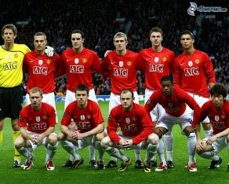
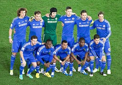
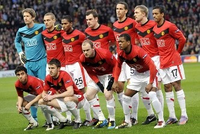
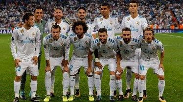
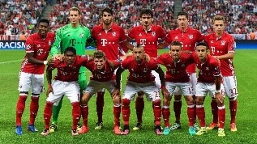
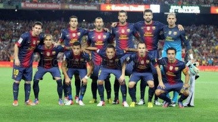
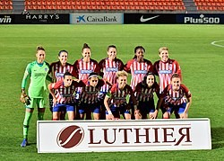
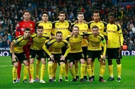
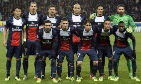

1857. október 24-én alapították a Sheffield FC nevű klubot, amely a mai napig üzemel, és büszkén viseli a
legidősebb futballklub kitüntető címét. Az első haza futballcsapat 1897. február 7-én alakult meg.
Sok focicsapatnak van beceneve, például Arsenal: The Gunners – az Ágyúsok, Chelsea: The Blues – a Kékek
(mezszín), Liverpool: The Reds – a Vörösök (mezszín), Manchester United: The Red Devils – a Vörös Ördögök.
A Forbes amerikai üzleti magazin számítása szerint jelenleg a Barcelona a világ legértékesebb
labdarúgócsapata.

Arsenal
Mérkőzéseit az Emirates stadionban játssza London városában.
Edző: Mikel Arteta
Góllövők: Theo Walcott, Olivier Giroud, Robin van Persie

Chelsea
Mérkőzéseit a Stamford Bridge stadionban játssza London városában.
Edző: T. Tuchel
Góllövők: Eden Hazard, Frank Lampard, Didier Drogba

Manchester United
Mérkőzéseit az Old Trafford stadionban játssza Manchester városában.
Edző: O. Solskjær
Góllövők: Wayne Rooney, Marcus Rashford, Anthony Martial

Real Madrid
Mérkőzéseit az Estadio Alfredo Di Stéfano stadionban játssza Madrid városában.
Edző: Zinedine Zidane
Góllövők: Cristiano Ronaldo, Karim Benzema, Gonzalo Higuaín

Bayern München
Mérkőzéseit az Allianz Arena stadionban játssza München városában.
Edző: H. Flick
Góllövők: Robert Lewandowski, Thomas Müller, Arjen Robben

Barcelona
Mérkőzéseit a Camp Nou stadionban játssza Barcelona városában.
Edző: Ronald Koeman
Góllövők: Lionel Messi, Luis Suarez, Neymar

Atlético Madrid
Mérkőzéseit az Estadio Wanda Metropolitano stadionban játssza Madrid városában.
Edző: D. Simeone
Góllövők: Antoine Griezmann, Diego Costa, Diego Forlán

Borussia Dortmund
Mérkőzéseit a Signal-Iduna-Park stadionban játssza Dortmund városában.
Edző: E. Terzic
Góllövők: Pierre-Emerick Aubameyang, Marco Reus, Robert Lewandowski

Paris St. Germain
Mérkőzéseit a Parc des Princes stadionban játssza Paris városában.
Edző: M. Pochettino
Góllövők: Edinson Cavani, Zlatan Ibrahimovic, Kylian Mbappe Lottin